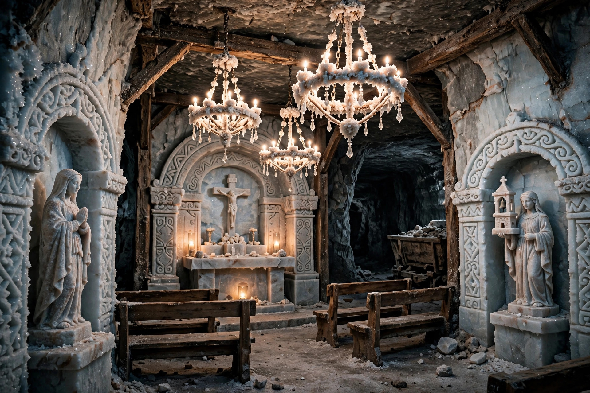

| Location | Wieliczka, Lesser Poland, Poland |
|---|---|
| Depth | 327 m (1,073 ft) |
| Operated | 13th century – 1996 |
| UNESCO | World Heritage Site (1978) |
The Wieliczka Salt Mine (Polish: Kopalnia soli Wieliczka), in the town of Wieliczka in southern Poland, within the Kraków metropolitan area, is one of the world's oldest operating salt mines. Rock salt was mined here continuously from the 13th century until commercial production ended in 1996; brine extraction in the area dates back to Neolithic times.
The mine reaches a depth of 327 metres and extends for some 245–287 km of galleries on nine levels. Its corridors contain dozens of statues, chapels and an entire cathedral carved by generations of miners out of the rock salt, including bas-relief copies of famous artworks such as Leonardo's Last Supper. The centrepiece is the Chapel of St Kinga, a vast underground church about 100 metres below the surface, with salt chandeliers, altars and sculptures. The mine also contains an underground lake, a museum, and a sanatorium exploiting the therapeutic microclimate of the salt chambers.
Legend associates the mine with the Hungarian princess Kinga (St Kinga), patron saint of salt miners, who is said to have thrown her engagement ring into a Hungarian salt mine and found it in the first lump of salt at Wieliczka. The mine was a valuable crown enterprise for centuries — at times salt revenue accounted for a large share of the Polish royal income — and famous visitors over the years included Copernicus, Goethe, Chopin and Pope John Paul II. Designated a UNESCO World Heritage Site in 1978 (among the first twelve sites ever listed), it now receives well over a million visitors annually.